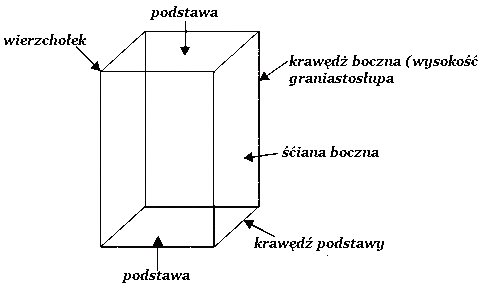
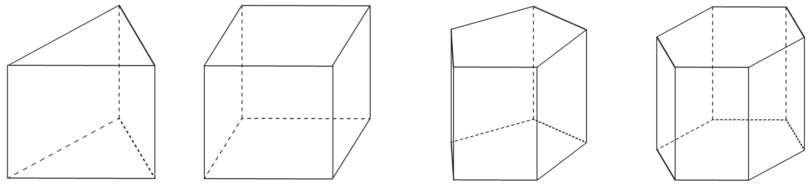

Graniastosłup to wielościan, którego dwie ściany, zwane podstawami, są przystającymi wielokątami zawartymi w płaszczyznach równoległych, a pozostałe ściany, zwane ścianami bocznymi, są równoległobokami o wierzchołkach należących do podstawy.
Dowolny odcinek, który łączy płaszczyzny zawierające podstawy graniastosłupa i jest do nich prostopadły, nazywamy wysokością graniastosłupa. Powierzchnię boczną graniastosłupa stanowią jego ściany boczne.
Jeśli krawędzie boczne graniastosłupa są prostopadłe do podstawy, to graniastosłup nazywami prostym, natomiast w przeciwnym razie nazywamy pochyłym.
W zależności od tego, jakim wielokątem jest podstawa graniastosłupa, mówimy o graniastosłupie trójkątnym, czworokątnym, pięciokątnym itp.
Graniastosłup prawidłowylub inaczej zawny foremny to taki graniastosłup porsty, który każda z podstaw jest jakim kolwiek wielokątem foremnym. Wielokąt foremny jest to wielokąt, którego wszystkie boki i kąty wewnętrzne są równe.